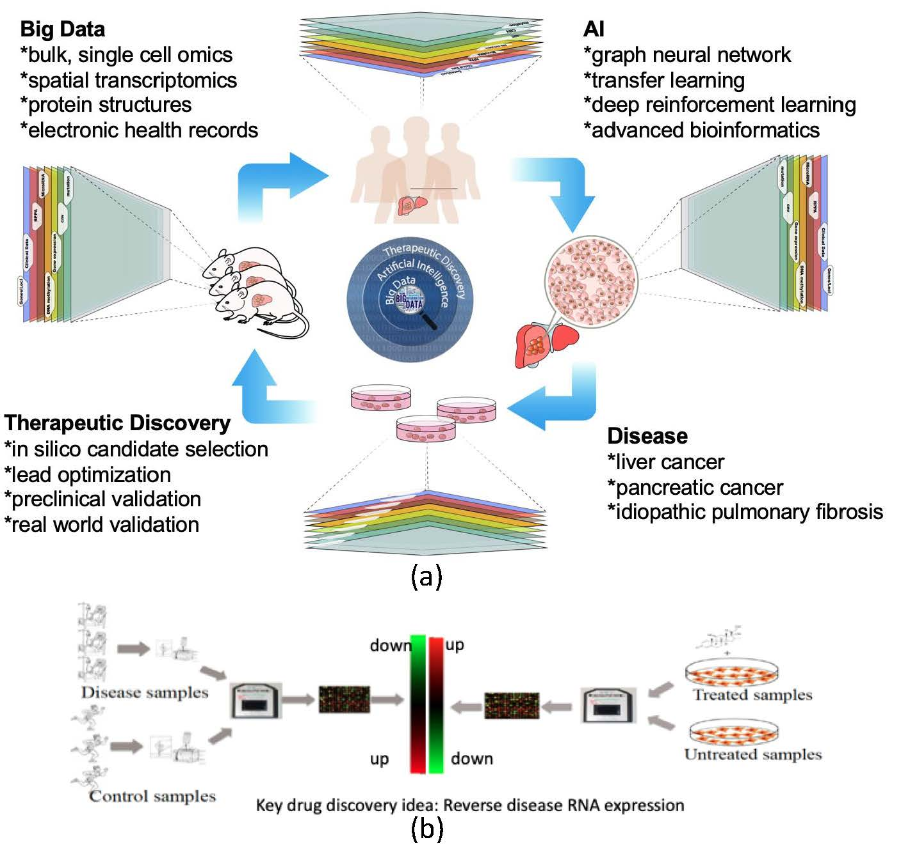

Democratize AI-based drug discovery in academia
The mission of AID in the College of Human Medicine at Michigan State University (MSU) is to build a collaboration of AI, big data and the local drug discovery community, train the next generation of scientists with specialized expertise, and ultimately evolve into a sustainable research and education program. To achieve research excellence, AID leverages emerging big data (e.g., single cell and spatial transcriptomics, electronic health records), state-of-the-art AI methods (e.g., graph neural network, transfer learning, deep reinforcement learning), and advanced preclinical models (e.g., ex vivo tissue slice culture, organoids). AID takes a novel, previously unexplored patient-centric approach where drugs are proposed based on the RNA features derived from patients and are subsequently validated in the models derived from patient tissues. AID supports the repurposing of existing drugs for new indications in order to expedite the discovery and approval process, as well as the discovery of novel compounds, which may take more time but offer new therapeutic approaches and intellectual property. One key competency for AID is its unique transcriptomics-based drug discovery platform developed by our team members.
*IPF is used as an example.
| Indication | Lead Investigators | Status | Goal |
|---|---|---|---|
| HCC | Samuel So / Mei-Sze Chua (Stanford) | Graduated | Novel |
| DIPG | Rintaro Hashizume (UAB) | PK/In vivo | Novel |
| IPF | Xiaopeng Li (MSU), Reda Girgis (Corewell) | Lead optimization | Repurposing/Novel |
| Prostate cancer bone metastasis | Xiaohong Li (Utoledo) | In vivo | Novel |
| Mesenchymal stem cell dedifferentiation | Ling Huang (HFH) | In vitro | Repurposing |
| Endometriosis | Asgi Fazleabas (MSU) | In vitro | Repurposing |
| AML | Sachi Horibata (MSU) | In vitro | Repurposing |
| Alzheimer’s disease | Dave Morgan (MSU) | In silico | Repurposing |
| Pediatric MODS | Surender Rajasekaran (Corewell) | Signature discovery | Repurposing |
| Cardiogenic shock | Brian Trethowan/Renzo Loyaga Rendon (Corewell) | Signature discovery | Repurposing |
| KRAS inhibitor | Ling Huang (HFH) | Signature discovery | Novel |
*Status: Signature discovery --> In silico --> In vitro --> Lead optimization --> PK --> In vivo --> Graduated
PI | AI Drug Discovery | Work experiences at Stanford, UCSF, Novartis, Pfizer, and Merck
co-PI | Medicinal Chemistry | Co-Director of Drug Discovery Program at MSU
co-PI | Drug Discovery | Director of Drug Discovery Program at MSU (Emeritus)
co-PI | AI Research & Education | Computer Science and Engineering
co-PI | AI Research & Education | Statistics and Probability
Lead | AI Drug Discovery